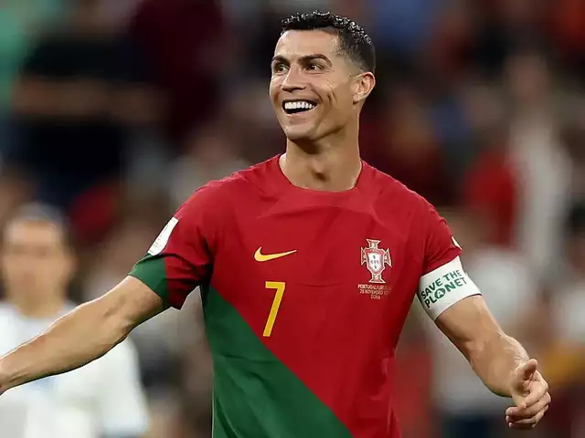
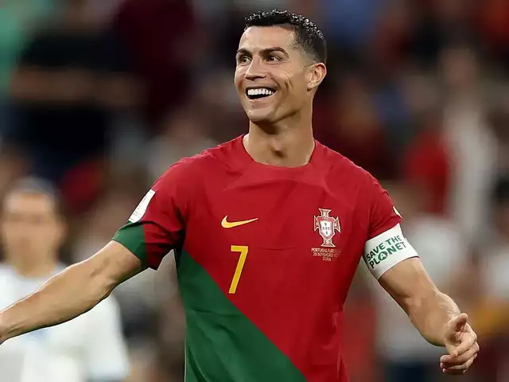
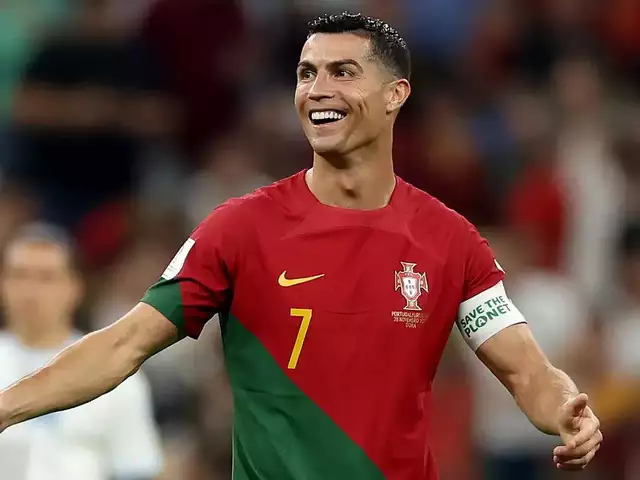

Fotografi
 

Cristiano Ronaldo, i lindur më 5 shkurt 1985 në Madeira, Portugal, është një futbollist i njohur ndërkombëtar. Ai ka luajtur për ekipet si Sporting Lisbon, Manchester United, Real Madrid dhe Juventus. Ronaldo ka fituar shumë çmime dhe është një nga futbollistët më të mirë në historinë e lojës.
